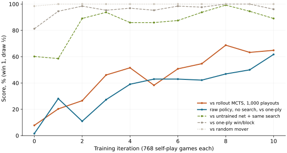

Let’s use compute / AlphaZero
AlphaZero in two runs
A Connect Four player that started from random weights and learned only by playing itself. The first run was killed by its timeout. The second picked up where it stopped.
At iteration 0 our network lost 58 of 64 games to classic Monte Carlo tree search, which picks each move by playing 1,000 random games to the end. Thirty-four training iterations later it won 60, drew 1 and lost 3. It never saw a human game or an opening book. We spent $4.01, a third of it on three runs that crashed before training started.

The loop
AlphaZero is three pieces in a cycle:
- Search. Before each move, a tree search asks the network two questions about positions it explores: which moves look promising, and who is winning. It runs 64 of these simulations and counts how often it visited each move.
- Self-play. The network plays itself, 768 games per iteration, choosing moves from those visit counts. Every position is saved with the search’s visit counts and, once the game ends, who won.
- Training. The network learns to predict the search’s visit counts and the final result. A network that predicts better makes the next search stronger, which produces better training targets.
Our network is small: five residual blocks, 374,810 parameters. One iteration takes about 75 seconds on an H100. Self-play is 17 seconds, split over 12 worker processes that each batch their games’ positions through the GPU at once. Training is 4 seconds. The rest is measuring strength.
Watch it play
Recorded games against the 1,000-playout searcher, early and late. Orange is our network, yellow is the searcher.
Loading recorded games…
What the numbers say
| Opponent | Iter 0 | Iter 10 | Iter 34 |
|---|---|---|---|
| Random mover | 63–0–1 | 64–0–0 | 64–0–0 |
| Win-or-block heuristic | 52–0–12 | 61–1–2 | 64–0–0 |
| Rollout MCTS, 1,000 playouts | 4–2–58 | 40–3–21 | 60–1–3 |
| Untrained network, same search | 34–9–21 | 56–2–6 | 62–2–0 |
| No search at all, vs win-or-block | 1–0–63 | 39–1–24 | 34–1–29 |
We planned to measure progress against a random mover and a heuristic that takes a winning move when there is one and blocks the opponent’s when it must. Both turned out useless as yardsticks. Search does the heavy lifting against them: with 64 simulations, even the untrained network wins 81% against the heuristic. The rollout searcher is the opponent that shows learning.
The last row is the network alone, playing its top-rated move with no search. It learned enough to beat the heuristic about half the time, then stalled. The heuristic punishes every missed block, and the raw network still misses some. With search, the same network won every game against it from iteration 18 on.
Each point is 64 games, which carries roughly ±12 points of noise in the middle of the scale. The dip at iteration 12 is within that.
Surviving a timeout
Every Compute run has a kill limit. We set the first run’s to 15 minutes on purpose, because the question was whether a run that hits it loses its work.
It doesn’t. After every iteration the job overwrites a checkpoint in Compute’s artifact folder: the network, the optimizer, the last eight iterations of self-play games, and the scores so far. The run was killed partway through iteration 11. The artifact it left held iteration 10, complete, and downloaded fine afterwards.
Resuming was harder. Compute can’t hand one run’s artifact to the next as input. A job can fetch it itself by installing the Compute command-line tool and signing in with an API key stored as a secret. That puts a key to the whole account on a rented GPU, so we didn’t. Instead the first run also copied each checkpoint to Hugging Face. The second run downloaded it in under a second and carried on from iteration 11 with the same optimizer state and replay data. It stopped itself after 19 minutes, at iteration 34. We’ve asked Compute for a way to pass artifacts between runs.
Three crashes first
Self-play is slow Python tree search, so it runs in parallel worker processes. Getting those workers started on Compute took three tries and $1.36:
- Forked workers couldn’t use the GPU, because the parent process had already touched CUDA.
- Spawned workers couldn’t import the script. Compute loads
train.pyunder a generated module name that a fresh process can’t find. - A hung start sat silent until the kill limit. The parent waited forever for workers that had already died.
Now each worker is an ordinary python train.py --az-worker process connected to the parent over a local socket. If one dies, the parent prints why and exits.
Run it yourself
With Compute set up and train.py downloaded, a three-iteration check costs about $0.35:
compute run train.py::train --gpu runpod/H100-SXM --dry-run
compute run train.py::train --gpu runpod/H100-SXM \
--timeout 300 --args '{"sample": true}' --waitThe reproduction guide covers the two-run training, both ways of resuming, and every setting. There are also instructions for an agent. We stopped at Connect Four: 9×9 Go needs roughly 25 times the search per game, and 19×19 is far beyond one GPU.